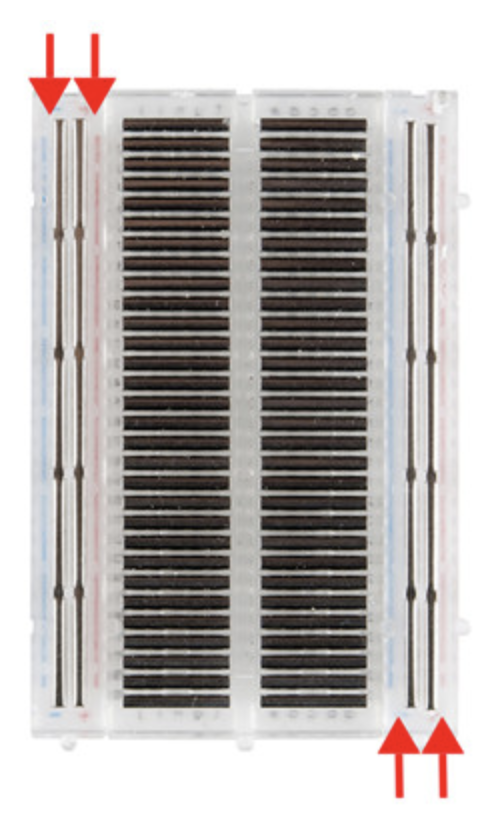
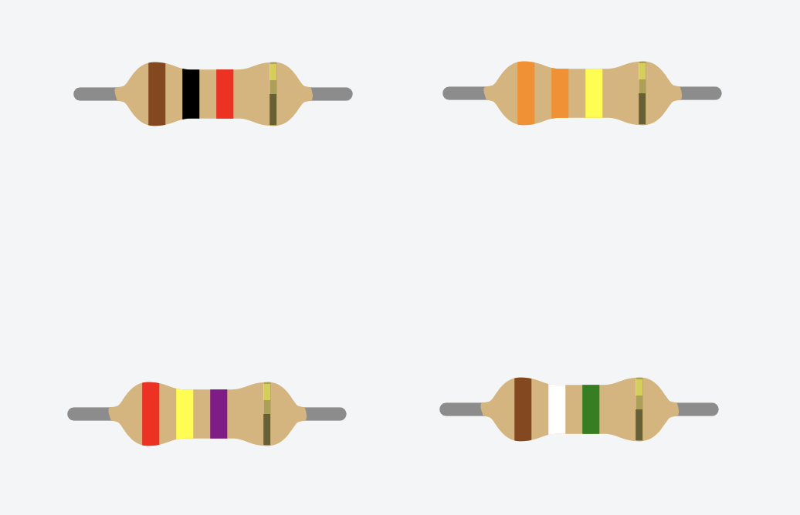
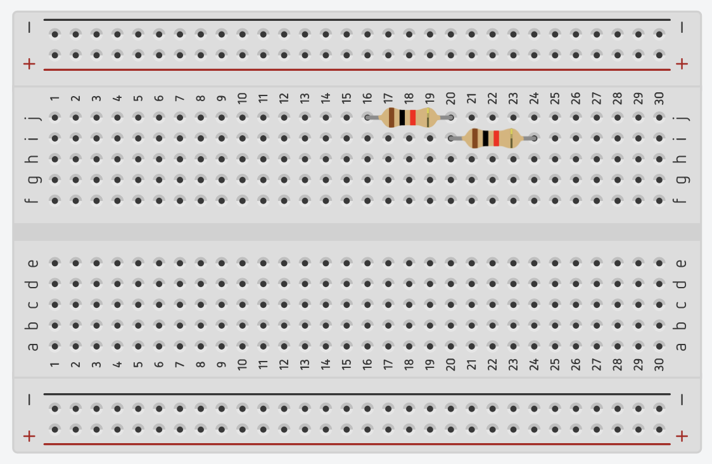
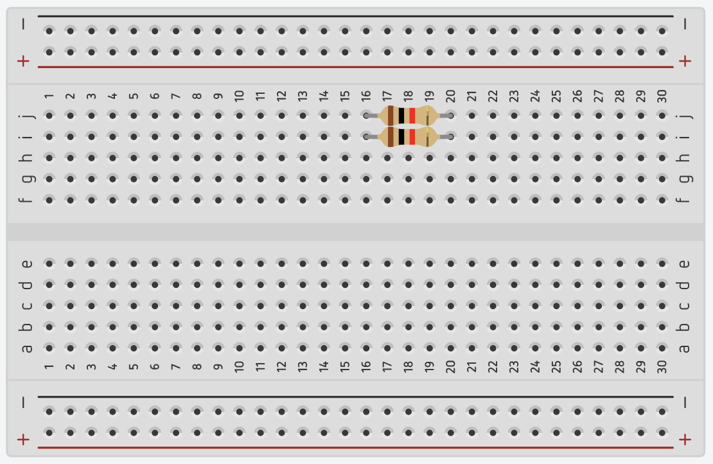

基礎電路實作
姓名： 日期：
1. 課前暖身：電流是什麼？
電流在電路中的運作，可類比為水流系統：
水流系統
抽水馬達 (推力) → 水管 (通道) → 水車 (做功) → 窄管 (限制流速)
電路系統
電源 (電壓) → 導線 (電流通道) → LED (發光工作) → 電阻器 (限流)
思考任務 如果電線斷了，電流會發生什麼事？請在此處繪製你的想法：
電流在電路中的運作，可類比為水流系統：
抽水馬達 (推力) → 水管 (通道) → 水車 (做功) → 窄管 (限制流速)
電源 (電壓) → 導線 (電流通道) → LED (發光工作) → 電阻器 (限流)
思考任務 如果電線斷了，電流會發生什麼事？請在此處繪製你的想法：
示範電路圖 請參考下方圖示進行接線：

操作步驟
觀察記錄 成功發光了嗎？ □ 是 □ 否

「黑 0、棕 1、紅 2、橘 3、黃 4、綠 5、藍 6、紫 7、灰 8、白 9」
| 顏色組合 | 計算方式 | 阻值 |
|---|---|---|
| 棕 黑 棕 | 1-0-(1個0) | 100 Ω |
| 紅 紅 棕 | 2-2-(1個0) | 220 Ω |
隨堂檢驗 請寫出圖中四顆電阻的阻值：

1. ___Ω 2. ___Ω 3. ___Ω 4. ___Ω
理論公式
示範接法

串聯示範

並聯示範
| 接法 | 預測計算值(Ω) | 亮度 | 電表實測值(Ω) |
|---|---|---|---|
| 單顆 | |||
| 串聯 | |||
| 並聯 |
按鈕開關任務： 利用按鈕控制 LED 閃爍，試著按出你的英文縮寫。
利用滑動開關切換「紅燈」與「綠燈」，絕對不能兩燈同時亮！
電路規劃區